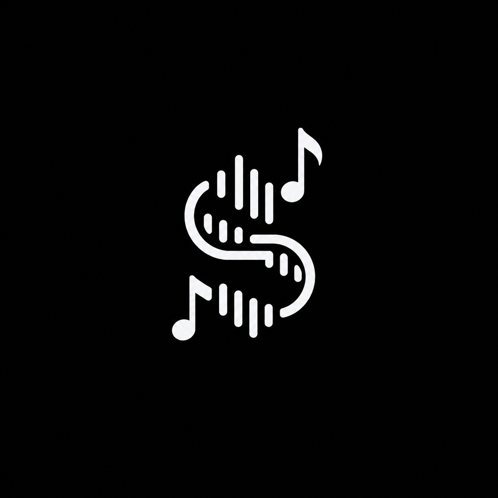

Visual demo
Replay mode
Replays a known note sequence through the SDK so a viewer can see measures highlight without microphone setup.

STROBATO
Strobato helps sheet music platforms follow a musician through a MusicXML score and signal the host app when to highlight measures or turn pages.
How it works
SDK example
Host apps keep control of the UI. Strobato only returns where the musician appears to be, how confident it is, and whether a page turn should happen.
from strobato_sdk import StrobatoEngine
engine = StrobatoEngine(measures_per_page=2)
engine.load_score("score.musicxml")
result = engine.update_with_notes([
"C4", "D4", "E4", "F4", "G4"
])
host_app.highlight(result.current_measure)
if result.page_turn_signal:
host_app.turn_page()Visual demo
Replays a known note sequence through the SDK so a viewer can see measures highlight without microphone setup.
Experimental
Uses microphone input, pitch detection, and note-event compression to update the same host-app style UI from real piano audio.
Why SDK-first
The business wedge is not another sheet music reader. It is a synchronization layer that platforms like digital score readers, practice tools, and notation apps could integrate without rebuilding their product around Strobato.
Current status
Roadmap
Contact / waitlist
Strobato is early. If real-time score following would make your app feel smarter, join the waitlist or ask for the demo.